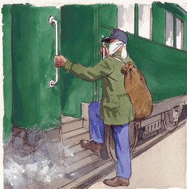
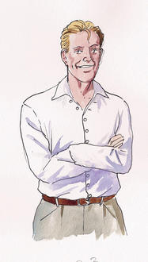
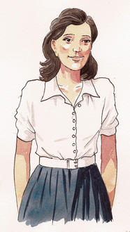

HEROES
Written By: Robert Cormier
In the book Heroes, by Robert Cormier, Francis Joseph Cassavant is returning from
WWII with the challenge of having part of his face blown off by a grenade. As Francis struggles
to come to terms with his new identity, he becomes increasingly isolated and distant from the
people around him. He feels like he no longer belongs in his hometown, and is unable to connect
with his friends in the same way that he did before the war. The book highlights the struggles
that some veterans face when returning home from war.

Francis grtting on the train.

Larry LaSalle is a former high school student who served in World War II and has returned to Frenchtown as a hero.
Larry is very charming and clever, and he uses these skills to convince the people of Frenchtown to follow him.
However, he is not really a good person and causes harm and destruction wherever he goes. Francis,
initially idolizes Larry,
but eventually realizes that Larry is not the hero he
thought he was and must confront him as his enemy.
